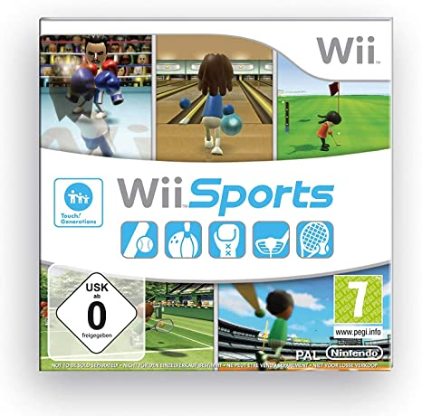

Wii Sports
Wii Sports es un videojuego deportivo que viene incluido con la consola Wii. El juego incluye cinco deportes diferentes: béisbol, bolos, boxeo, golf y tenis. Cada uno de los deportes puede ser jugado en modo un jugador o multijugador, permitiendo a los jugadores competir entre sí en los deportes que más les gusten.
Información del juego
- Desarrollador: Nintendo EAD
- Publicador: Nintendo
- Plataforma: Wii
- Año de lanzamiento: 2006
- Género: Deportes
- Modos de juego: Un jugador, Multijugador